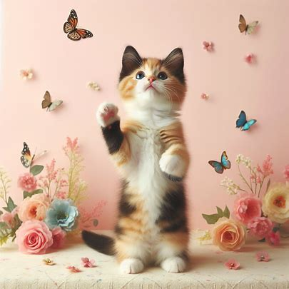

Cats are small, carnivorous mammals that are often kept as pets. They are known for their independent and curious nature. Cats have a flexible body, sharp retractable claws, and keen senses, including excellent night vision. They come in various breeds, each with its own unique characteristics and appearances.
Cats are known for their agility and hunting skills, making them excellent predators.
| S.no | Types of Cats |
|---|---|
| 1 | Persian: |
| 2 | Siamese: |
| 3 | Maine Coon: |
| 4 | Bengal: |